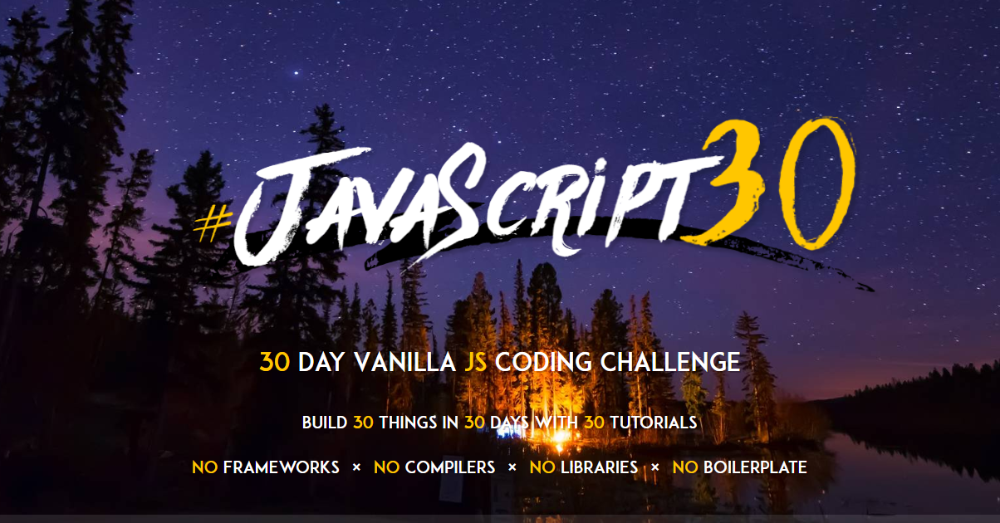
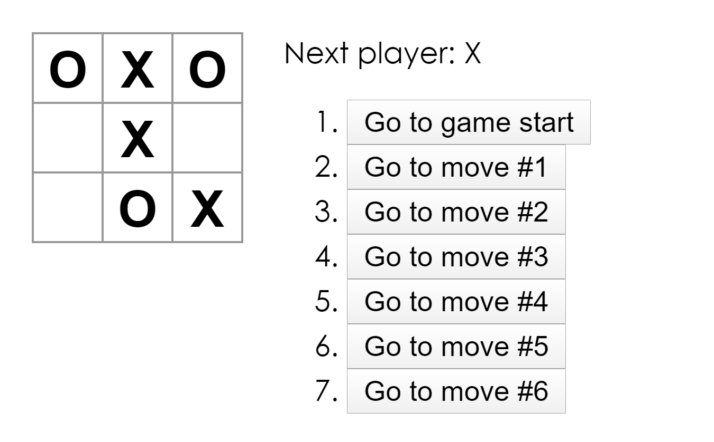

Practice
Javascript 30
Javascript 30 是一個免費的課程，它會提供material 和教學影片幫助我們學習。
課程包括Dom操作，CSS應用，Array & AJAX 操作，HTML5 & ES6 和一些Web API應用。
通過這個課程，我對html, CSS, javascript 的理解更深，根基亦更扎實。
參考:
https://javascript30.com/

React-TicTacToe & AWS amplify
實作react官方網站入門練習，並使用AWS amplify 部署和託管
重點:
1. 使用virtual DOM，增加效能。
2. 使用 JSX語法，方便用javascript建立UI。
3. 組件化，方便重用和維護。
4. Immutability（不可變性），可簡化複雜功能，容易偵測改變。
5. AWS Amplify 是一個開發平台,可用於建立安全、可擴展的行動和 Web 應用程式。
參考:
https://zh-hant.reactjs.org/docs/getting-started.htmlhttps://zh-hant.reactjs.org/tutorial/tutorial.html
